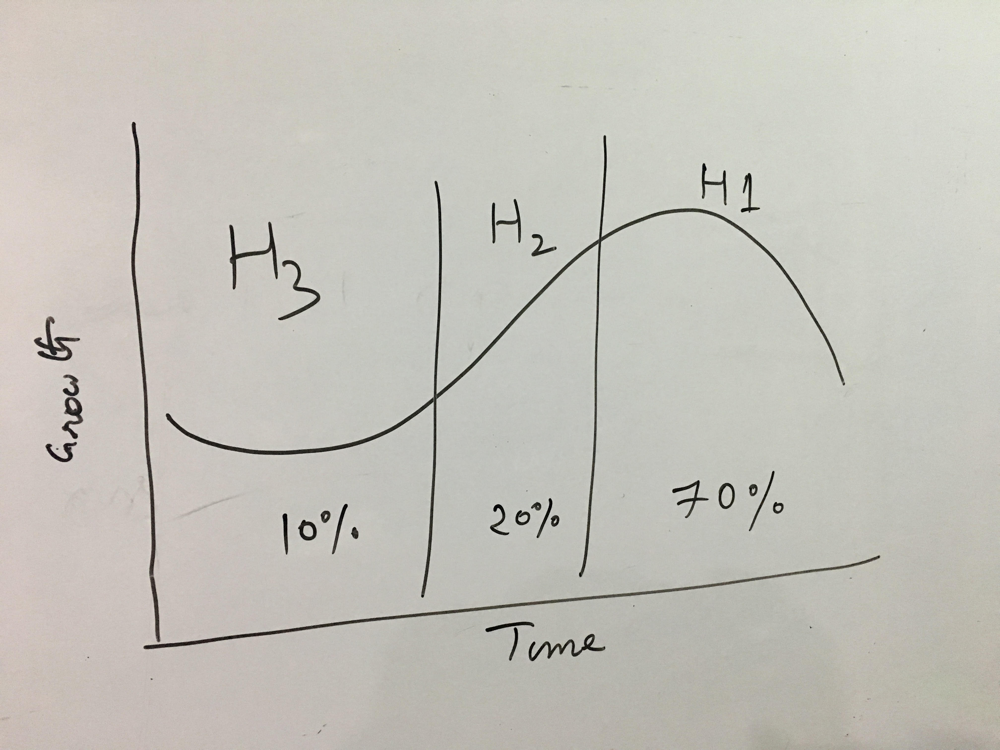
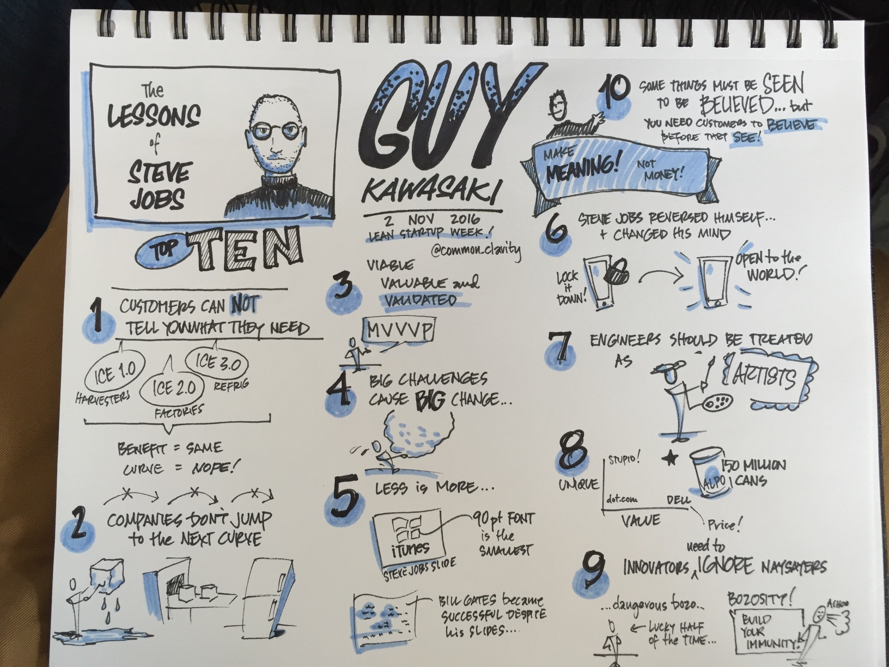
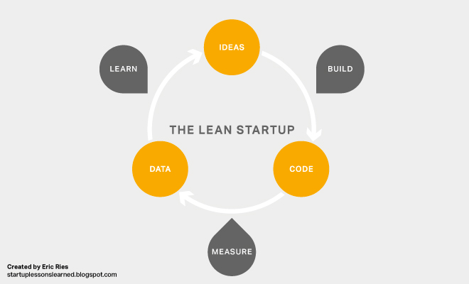
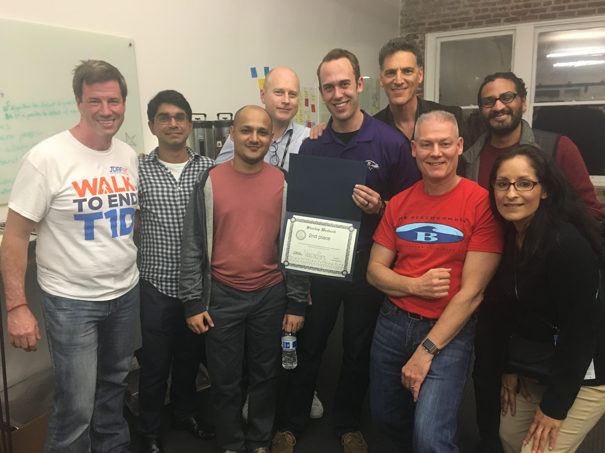

9 Important lessons from the Lean Startup Week 2016 San Francisco
I was at the lean Startup week 2016 in San Francisco couple of weeks ago. It is a great conference to meet entrepreneurs and innovation teams at other enterprises. Here are some of the key lessons I learned at the conference.
9 important lessons from the Lean Startup Week 2016 San Francisco
I was at the lean Startup week 2016 in San Francisco couple of weeks ago. It is a great conference to meet entrepreneurs and innovation teams at other enterprises. Here are some of the key lessons I learned at the conference.
1. WOM > PROM
Word-of-mouth growth should be greater than promotional growth.
To attract investment or VC money, your product needs to be good enough to have WOM greater than PROM. David Binetti spoke about how you can use WOM growth curve to decide when to invest more in promotions. He is a phenomenal speaker on Lean. If you get a chance to hear him talk, do NOT miss it.
2. Innovation = Ideation + Implementation
You don't have to be the fastest, you just need to be faster than your competition. David with Jonathan Bertfield spoke about how enterprises need to use McKinsey's 3 Horizon Model and continue investing in innovation while continuing to grow their existing business.
- Horizon 1 - Core business
- Horizon 2 - Emerging opportunities
- Horizon 3 - New ideas and innovation
The split in investment the speakers recommend:

More on what each horizon means here
3. 10 lessons from Steve jobs by Guy Kawasaki
Here is an amazing illustration by an unknown attendee

4. Your company needs to be your best product
Basecamp founder Jason Fried truly believes in this. Hearing him speak over the years, I realized at the event how well he has been able to execute on this and how every company should too!
5. Reduce customer anxiety and shorten your sales funnel
The best sales funnel isn't really a funnel and it's a flat circular ring. - SC Moatti. You can come closer to achieving it, if you can help alleviate some of the customer anxiety leading up to the sale.
And there is a sense of anxiety when making purchasing decisions arising from fear of missing out on a better product, paying the right price, future costs et cetera.
6. Understanding behavior change
Changing the behavior of your customers, leads, team members can have a profound impact on your business. One needs to understand some of the science behind it and be more observant.
Kelvin Kwong gave a few examples: the endowed progress effect. When we see some progress even if it is artificial we want to achieve that goal faster.
A few more behavior research topics that you should read on include Reactance, Commitment and Consistency, Foot in the door , Goal setting, and appropriate competition
7. You don't propose on your first date. Sales pitch should be like a proposal
Just because your target market wants what you offer and knows about you; don't start selling. Ryan Deiss, at a partner event - Weapons of Mass Distribution at 500Startups, blew our minds away with this simple truth about sales.
Spend lots of time together with your target market via blog conversations and helping them with other pressing problems they have, by providing smaller tools and guides. Fall in love before proposing !
8. Language drives the product. Make it about the customer and not about you
Before building a new product find out the space you want to be in.
Formulate problems in that space. Talk to potential customers to find
out what they want. Build the product based on your findings and use the
language they used to describe their problems to sell your product.
This was James Currier from NFX Guild. It was pretty cool to see his work that resulted from practicing the above!
9. Customer interviews are critical to increasing your odds at building a successful product
A lot of us have been practicing lean or at least trying to practice with the recommended mindset of: Build > Measure > Learn > Loop

But after hearing Justin Wilcox at the Startup Weekend talk about customer interviews, I really think it should be called the Learn > Measure > Build > Loop.
While attending the Startup Weekend, I joined a team working in the food space. Before building anything we used Justin's simple customer interview template to talk to few of our potential customers.
Justin's template
- What’s the hardest part about [problem context] ?
- Can you tell me about the last time that happened?
- Why was that hard?
- What, if anything, have you done to solve that problem?
- What don’t you love about the solutions you’ve tried?
You can read more on Customer Development on his blog.
The beauty of this approach is once you zero in on a space you want to be in, if you do the interviews right, the customers will tell you what the product should be and how and where to sell it.
Once you have that you need to go and sell it before even building it. And when you have people interested in buying it you can then build it.
While a lot of our potential customers didn't really need what we were trying to build. We learnt what they actually wanted by putting most of the effort in customer interviews during the weekend. And saved a ton of time on NOT building something nobody wanted.
While doing interviews
- Don't talk about your idea
- If they ask about it before the interview, politely ask them to wait till after it, to help avoid any bias
Even though we couldn't validate the idea to a great extend, we won the 2nd place!

It really was a great conference with tons of useful information and great people to connect with. If you were also attending please share other key lessons that you learned as comments. There are also detailed notes on talks by attendees here.